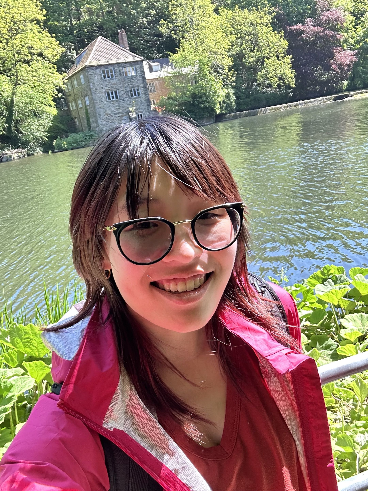
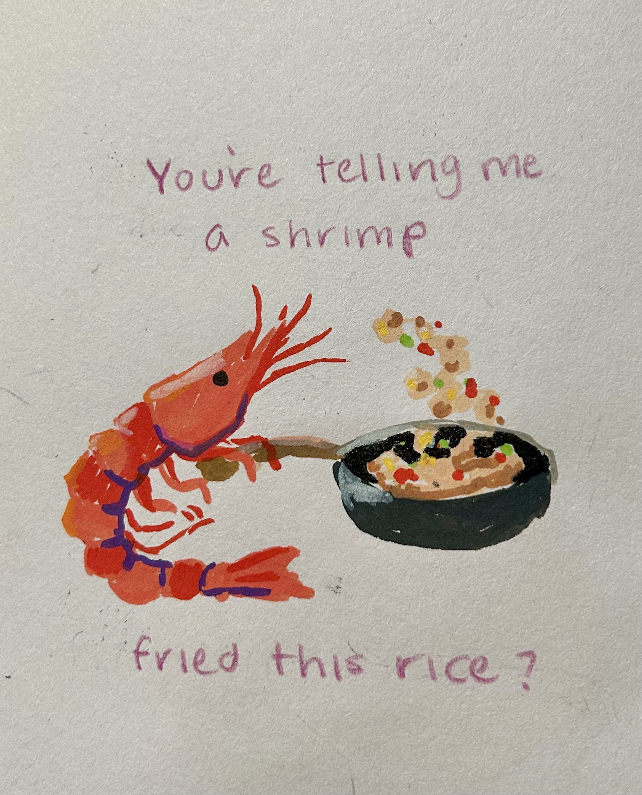

Currently I am studying computer science at Indiana University Bloomington with a minor in game design. I have been drawing ever since I was a little kid, and I eventually more to making more digital artwork. I have worked as a concept and digital artist for the Roblox game studio "BloxByte Games" for over 4 years now. I have also been working as a freelance commission artist under the name "KiwilyPad" for over 5 years now, making custom 2d artwork mostly of humanoid characters. I've also worked on making a few games and projects for classes, though many of these play more like demos than real games. I am currently working on the game Train Bash as a programmer, UI/UX designer, and 2d artist. I particularly love UI/UX because it combines both design and programming.

-------------------------

Other than making games, I love playing videogames, crafting, making cosplays, playing piano, and much more. I adore cute and cozy things and have a large collection of blankets and pillows that take up most of my bed. I really love cozy farming simulator games like Stardew Valley but I also enjoy Hollow Knight, Risk of Rain 2, Rocket League, House Flipper, and more! I am very passionate about videogames, and I hope someday to make games that bring other people joy.